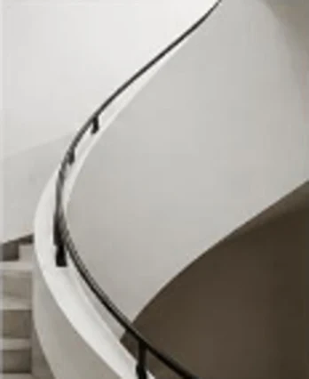
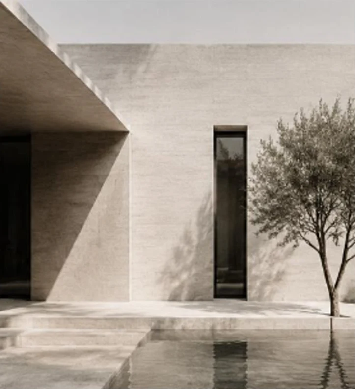

Une architecture qui a du sens.
01
Atelier Véritas est un bureau d’architecture installé à Bruxelles. Nous dessinons des lieux sobres, durables et lumineux, pensés pour la vie de tous les jours.
Voir les projets

Résidentiel
Projets récents
« Construire moins, mais mieux. »